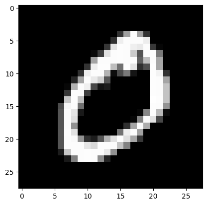

使用 PyTorch 构建卷积神经网络#
导入必要的库#
import torch
import torch.nn as nn
import torch.nn.functional as F
import torchvision.transforms as T
from torchvision import datasets
from torch.utils.data import DataLoader
import matplotlib.pyplot as plt
MNIST 数字分类#
为了展示二维卷积神经网络的高效性，我们将从经典的 MNIST 数据集（0-9 数字分类）开始。本示例将复用之前笔记本中的代码，特别是全连接网络的部分。
获取数据集并创建训练数据加载器#
transform=T.ToTensor() # Pour convertir les éléments en tensor torch directement
dataset = datasets.MNIST(root='./../data', train=True, download=True,transform=transform)
test_dataset = datasets.MNIST(root='./../data', train=False,transform=transform)
plt.imshow(dataset[1][0].permute(1,2,0).numpy(), cmap='gray')
plt.show()
print("Le chiffre sur l'image est un "+str(dataset[1][1]))

Le chiffre sur l'image est un 0
train_dataset, validation_dataset=torch.utils.data.random_split(dataset, [0.8,0.2])
train_loader = DataLoader(train_dataset, batch_size=64, shuffle=True)
val_loader= DataLoader(validation_dataset, batch_size=64, shuffle=True)
test_loader = DataLoader(test_dataset, batch_size=64, shuffle=False)
使用 PyTorch 构建卷积神经网络#
class cnn(nn.Module):
def __init__(self, *args, **kwargs) -> None:
super().__init__(*args, **kwargs)
self.conv1=nn.Conv2d(1,8,kernel_size=3,padding=1) # Couche de convolution de 8 filtres
self.conv2=nn.Conv2d(8,16,kernel_size=3,padding=1) # Couche de convolution de 16 filtres
self.conv3=nn.Conv2d(16,32,kernel_size=3,padding=1) # Couche de convolution de 32 filtres
self.pool1=nn.MaxPool2d((2,2)) # Couche de max pooling
self.pool2=nn.MaxPool2d((2,2))
self.fc=nn.Linear(32*7*7,10)
# La fonction forward est la fonction appelée lorsqu'on fait model(x)
def forward(self,x):
x=F.relu(self.conv1(x))
x=self.pool1(x)
x=F.relu(self.conv2(x))
x=self.pool2(x)
x=F.relu(self.conv3(x))
x=x.view(-1,32*7*7) # Pour convertir la feature map de taille 32x7x7 en taille vecteur de taille 1568
output=self.fc(x)
return output
model = cnn()
print(model)
print("Nombre de paramètres", sum(p.numel() for p in model.parameters()))
cnn(
(conv1): Conv2d(1, 8, kernel_size=(3, 3), stride=(1, 1), padding=(1, 1))
(conv2): Conv2d(8, 16, kernel_size=(3, 3), stride=(1, 1), padding=(1, 1))
(conv3): Conv2d(16, 32, kernel_size=(3, 3), stride=(1, 1), padding=(1, 1))
(pool1): MaxPool2d(kernel_size=(2, 2), stride=(2, 2), padding=0, dilation=1, ceil_mode=False)
(pool2): MaxPool2d(kernel_size=(2, 2), stride=(2, 2), padding=0, dilation=1, ceil_mode=False)
(fc): Linear(in_features=1568, out_features=10, bias=True)
)
Nombre de paramètres 21578
可以看到，该模型的参数数量远少于传统的全连接网络。
模型训练#
定义损失函数和训练超参数：
criterion = nn.CrossEntropyLoss()
epochs=5
learning_rate=0.001
optimizer=torch.optim.Adam(model.parameters(),lr=learning_rate)
现在开始训练模型：
for i in range(epochs):
loss_train=0
for images, labels in train_loader:
preds=model(images)
loss=criterion(preds,labels)
optimizer.zero_grad()
loss.backward()
optimizer.step()
loss_train+=loss
if i % 1 == 0:
print(f"step {i} train loss {loss_train/len(train_loader)}")
loss_val=0
for images, labels in val_loader:
with torch.no_grad(): # permet de ne pas calculer les gradients
preds=model(images)
loss=criterion(preds,labels)
loss_val+=loss
if i % 1 == 0:
print(f"step {i} val loss {loss_val/len(val_loader)}")
step 0 train loss 0.318773478269577
step 0 val loss 0.08984239399433136
step 1 train loss 0.08383051306009293
step 1 val loss 0.0710655003786087
step 2 train loss 0.05604167655110359
step 2 val loss 0.0528845489025116
step 3 train loss 0.04518255963921547
step 3 val loss 0.051780227571725845
step 4 train loss 0.03614392504096031
step 4 val loss 0.0416230633854866
计算测试集上的准确率：
correct = 0
total = 0
for images,labels in test_loader:
with torch.no_grad():
preds=model(images)
_, predicted = torch.max(preds.data, 1)
total += labels.size(0)
correct += (predicted == labels).sum().item()
test_acc = 100 * correct / total
print("Précision du modèle en phase de test : ",test_acc)
Précision du modèle en phase de test : 98.64
可以看到，该模型在测试集上的准确率约为 99%，而参数数量是其 10 倍的全连接网络准确率仅为 97.5%。
Softmax 与结果解释#
当模型对某个样本进行预测时，会输出形如以下的向量：
images,labels=next(iter(test_loader))
#Isolons un élément
image,label=images[0].unsqueeze(0),labels[0].unsqueeze(0) # Le unsqueeze permet de garder la dimension batch
pred=model(image)
print(pred)
tensor([[ -9.6179, -5.1802, -2.6094, 0.9121, -16.0603, -8.6510, -30.0099,
14.4031, -9.0074, -2.0431]], grad_fn=<AddmmBackward0>)
仔细观察结果，可以发现第 7 个元素的值最大，这意味着模型预测为 3（索引从 0 开始）。 验证其真实标签：
print(label)
tensor([7])
真实标签为 7。不过，我们更希望得到类别概率，这样更直观，也更容易理解模型的置信度。
为此，我们使用 softmax 激活函数。
其定义如下： \(\sigma(z)_i = \frac{e^{z_i}}{\sum_{j=1}^{K} e^{z_j}}\)，其中 \(K\) 是模型的类别数。
该函数被称为 softmax，因为它能放大最大值，同时压缩其他值，从而得到一个概率分布（所有 \(K\) 个类别的值之和为 1）。
print(F.softmax(pred))
tensor([[3.6964e-11, 3.1266e-09, 4.0884e-08, 1.3833e-06, 5.8867e-14, 9.7215e-11,
5.1481e-20, 1.0000e+00, 6.8068e-11, 7.2027e-08]],
grad_fn=<SoftmaxBackward0>)
/tmp/ipykernel_232253/3904022211.py:1: UserWarning: Implicit dimension choice for softmax has been deprecated. Change the call to include dim=X as an argument.
print(F.softmax(pred))
现在输出的值为概率，可以看到模型以 99.9% 的置信度预测为 7，说明模型对该预测非常有信心。
其他应用#
卷积神经网络在图像处理领域表现尤为出色，同时也广泛应用于音频处理和视频处理等领域。
本课程后续的笔记本将展示卷积神经网络在比 MNIST 更复杂的任务中的应用。建议使用 GPU 或在 Google Colab 上运行笔记本，以获得合理的训练时间（不过，即使不训练模型，也可以继续学习课程内容）。